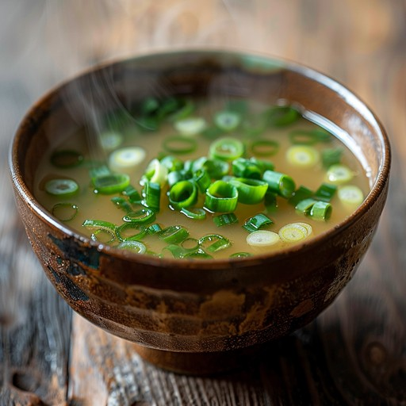

Home
Miso Soup

Description
A simple vegan miso soup recipe. Serves 4.
Ingredients
For the dashi stock:
- 1 litre filtered/mineral water
- 3 – 4 dried shiitake mushrooms
- 15g dried kombu (edible sea kelp)
For the final miso soup:
- The previously prepared dashi stock
- 1 heaped tablespoon miso paste
- 100g silken tofu
- 3 – 4 fresh scallions
Steps
The first job is to make the dashi stock:
- Put the dried shiitake and kombu into a large bowl/container.
- Add the water to the bowl/container.
- Cover and leave in the fridge for 6 hours (or overnight).
- Remove from fridge and transfer the liquid as well as the other
ingredients into a large enough pan.
- Cover and boil for 10 minutes.
- Remove pan from the heat and let it cool.
- Remove the mushrooms and kombu (keep these for use in other dishes
e.g. stir-fry, ramen).
- Pour into a container and keep for when needed.
Next, prepare the miso soup:
- Cut tofu into 1cm cubes.
- Wash and cut scallions into medium-fine rounds.
- Bring the dashi stock to 80°C in a pan.
- Add the miso paste and whisk until completely dissolved.
- Now add the tofu cubes and chopped scallions. Serve hot. Enjoy!